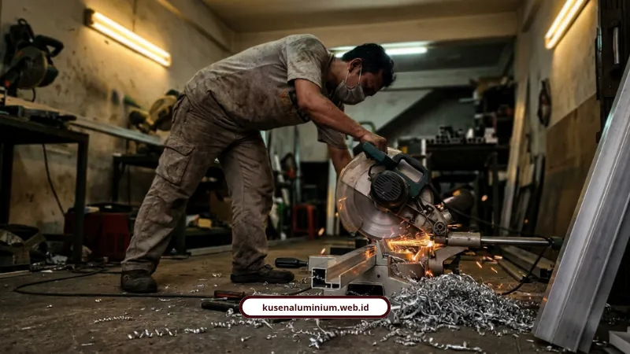
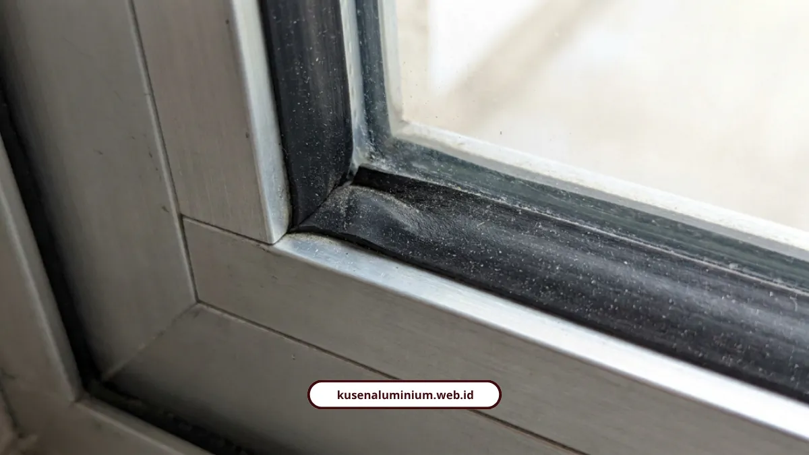

Jasa Kusen Aluminium Surabaya, Presisi dan Bergaransi

📌 Ringkasan Inti
Layanan aplikator dan fabrikasi spesialis kusen aluminium melayani Surabaya dengan presisi potongan miter 45° toleransi 0,5 mm, material SNI YKK AP & Alexindo, serta garansi resmi tertulis:
- Pengalaman lebih dari 10 tahun dengan rekam jejak 500+ titik bukaan terpasang rapi di Jawa Timur.
- Presisi sambungan sudut miter 45 derajat ber-toleransi 0,5 mm dengan karet weather-seal EPDM ganda anti bocor.
- Material 100% bersertifikasi SNI dengan ketebalan profil standar 1,1 mm hingga 1,35 mm dari YKK AP, Alexindo, dan Forta.
- Pilihan lengkap profil 3 dan 4 inch, aneka warna powder coating tahan cuaca panas tropis Surabaya, serta aksesoris stainless 304.
- Alur kerja transparan 4 tahap: survei presisi, transparansi RAB, fabrikasi workshop, dan penyerahan sertifikat garansi resmi.
- Kenapa Harus Pilih Kami untuk Kusen Aluminium di Surabaya?
- Seberapa Presisi Sambungan Miter 45 Derajat Kami?
- Pilihan Profil dan Finishing Apa Saja yang Tersedia?
- Berapa Biaya dan Bagaimana Alur Kerjanya?
- Siapa Saja Teknisi yang Mengerjakan Instalasi di Lapangan?
- Apa Kata Klien yang Sudah Pakai Jasa Kami?
- Saatnya Ganti Kusen yang Benar-Benar Presisi
- FAQ Seputar Jasa Kusen Aluminium Surabaya
Kami melayani Surabaya dengan jasa kusen aluminium fabrikasi presisi miter 0,5 mm, material SNI YKK AP dan Alexindo, serta garansi resmi anti bocor dan anti renggang.
Sudah berkali-kali ganti kusen tapi tetap renggang saat musim hujan? Saya paham betul kenapa banyak pemilik rumah di Surabaya akhirnya menyerah sama kusen kayu atau kusen aluminium abal-abal.
Panas kota ini bikin material murahan gampang memuai, terus muncul celah, terus air rembes masuk pas hujan deras. Ujung-ujungnya bongkar ulang, keluar biaya dua kali.
Nah, di sinilah kami masuk. Bukan cuma jual kusen, tapi menjamin presisi dari ukur sampai pasang.
Kenapa Harus Pilih Kami untuk Kusen Aluminium di Surabaya?
Jawabannya simpel: pengalaman lebih dari 10 tahun dan rekam jejak 500+ bukaan sudah terpasang bukan angka bualan.
Beberapa poin yang bikin kami beda dari tukang kusen musiman:
- Material 100% bersertifikat SNI dari YKK AP, Alexindo, dan Forta
- Ketebalan aluminium 1,1 mm sampai 1,35 mm, bukan aluminium tipis yang gampang penyok
- Jangkauan layanan Surabaya, Kota Malang, Kabupaten Malang, Kota Batu, Pasuruan, sampai Kediri
- Semua pengerjaan disertai sertifikat garansi resmi
Kalau ada yang jual kusen aluminium jauh di bawah harga pasaran, biasanya ketebalannya juga ikut "dipangkas". Itu bukan rahasia dapur, itu fakta lapangan yang sering saya temui.
Seberapa Presisi Sambungan Miter 45 Derajat Kami?
Toleransi presisinya cuma 0,5 mm, jadi sambungan antar sisi rapat sempurna tanpa celah tempat kotoran atau air numpuk.
Ini bukan sekadar klaim marketing. Proses fabrikasinya begini:
- Sudut rangka dipotong pakai mesin potong miter presisi tinggi
- Toleransi maksimal cuma 0,5 mm di tiap sambungan
- Dilengkapi karet weather-seal EPDM ganda di sekeliling frame
Karet EPDM ini yang jadi kunci kenapa kusen kami tahan bocor pas hujan deras khas Surabaya, sekaligus meredam suara bising jalan raya. Aksesorisnya juga bukan kaleng-kaleng, pakai engsel stang casement, kunci rambuncis multi-point, crescent lock, dan rel sliding stainless steel 304 yang anti karat dan anti melengkung.
Soal pengiriman material dari workshop sampai lokasi proyek Surabaya, kami sudah bahas detail proses dan pengiriman material prefabrikasi ke Surabaya biar sampai lokasi tanpa cacat produksi.

Pilihan Profil dan Finishing Apa Saja yang Tersedia?
Ada dua pilihan profil utama, yaitu 3 inch untuk hunian minimalis dan 4 inch untuk kebutuhan ekstra kuat.
Rinciannya:
- Profil 3 Inch: ringkas, ekonomis, cocok untuk rumah minimalis
- Profil 4 Inch: frame lebih tebal, pas untuk pintu tinggi atau gedung komersial
Untuk finishing, kami sediakan Hitam Anodized, Putih Coating, Cokelat Dark, Urat Kayu, dan Silver Anodized. Semua pakai teknik powder coating dan anodized yang tidak gampang terkelupas walau kena panas terik bertahun-tahun.
Katalog produk yang bisa dipesan juga variatif:
- Kusen profil 3 dan 4 inch (YKK AP dan Alexindo)
- Pintu lipat (folding door) heavy-duty
- Jendela casement dan jungkit double rubber
- Pintu geser slim frame dan glass minimalis
- Partisi kaca tempered 8-12 mm untuk kantor dan ruko
- Jendela sliding 2 daun dengan crescent lock
Detail teknis soal standar pengukuran dan kenapa presisi itu krusial, sudah kami kupas tuntas di pembahasan fabrikasi kusen presisi yang menjelaskan kenapa toleransi milimeter itu bukan hal sepele.
Kusen Aluminium Presisi & Bergaransi Resmi Surabaya
Solusi kusen bebas renggang dan bebas bocor untuk hunian maupun gedung komersial di Surabaya. Dikerjakan dengan toleransi miter 0,5 mm dan sertifikat garansi tertulis.
Berapa Biaya dan Bagaimana Alur Kerjanya?
Alur kerjanya transparan lewat 4 tahap, mulai dari survei sampai penyerahan sertifikat garansi, tanpa biaya tersembunyi.
Urutannya seperti ini:
- Survei dan ukur presisi di lokasi
- RAB dan gambar kerja, disusun transparan per meter lari atau meter persegi
- Fabrikasi workshop, potong miter 45 derajat dan rakit, butuh 3-7 hari kerja
- Instalasi dan weather-seal, pemasangan 1-2 hari, aplikasi sealant silikon, uji fungsi kunci, lalu serah terima sertifikat garansi
Kalau malas menunggu penawaran manual, pembaca bisa langsung pakai Kalkulator Estimasi Biaya Instan lewat WhatsApp biar dapat gambaran RAB dalam hitungan menit.
Setiap pengerjaan juga otomatis dapat sertifikat garansi resmi, jaminan anti bocor sealant EPDM, dan garansi fungsi kunci. Jadi bukan cuma janji manis di awal, ada dokumennya.
Siapa Saja Teknisi yang Mengerjakan Instalasi di Lapangan?
Instalasi ditangani tim teknisi mitra yang sudah terverifikasi dan paham detail teknis pemasangan aluminium, bukan tukang serabutan.
Kalau penasaran soal standar kerja, sertifikasi, dan cakupan layanan mereka di lapangan Surabaya, kami sudah tulis rinci di halaman tim teknisi mitra untuk instalasi Surabaya. Jadi pembaca tahu persis siapa yang bakal masuk ke rumah atau proyeknya.
Apa Kata Klien yang Sudah Pakai Jasa Kami?
Daripada saya yang cerita sendiri, mending baca langsung testimoni dari klien nyata.
Rizky Hermawan, Manager PT Maju Bersama, bilang begini:
"Proyek kantor kami selesai dengan kualitas luar biasa. Transparansi RAB dan laporan progres berkala membuat kami tenang selama proses pembangunan berlangsung."
Sementara dr. Sylvia Anggraeni, klien hunian di Lowokwaru, punya pengalaman lain:
"Jendela casement Alexindo buatan KUSEN ALUMINIUM hasilnya sangat rapi. Kedap air saat hujan deras dan bising berkurang drastis."
Dua testimoni ini mewakili dua kebutuhan berbeda, yang satu proyek komersial butuh transparansi biaya, satu lagi hunian pribadi butuh kedap suara dan anti bocor. Keduanya terpenuhi.
"Iklim panas terik dan hujan deras Surabaya menuntut profil aluminium tebal minimal 1,1 mm dengan sambungan sudut miter 45° yang benar-benar rapat, sehingga kusen tidak memuai renggang dan bebas risiko bocor air."
Saatnya Ganti Kusen yang Benar-Benar Presisi
Kusen aluminium yang bagus itu bukan soal harga murah, tapi soal presisi sambungan, ketebalan material, dan garansi yang jelas di atas kertas. Kami sudah buktikan lewat 500+ proyek terpasang di Surabaya dan sekitarnya.
Kalau sudah capek dengan kusen renggang, bocor, atau macet susah dibuka tutup, langsung saja cek galeri hasil kerja kami dan hitung dulu perkiraan biayanya:
- Lihat portofolio nyata di Galeri Proyek Kami
- Hitung estimasi biaya sendiri lewat Kalkulator Estimasi Biaya
FAQ Seputar Jasa Kusen Aluminium Surabaya
Total waktu sekitar 4-9 hari kerja, terdiri dari 3-7 hari fabrikasi di workshop ditambah 1-2 hari instalasi di lokasi.
Bisa, kami punya profil 4 inch dengan frame lebih tebal khusus untuk pintu tinggi, ruko, dan gedung komersial yang butuh kekuatan ekstra.
Setiap pengerjaan dilengkapi sertifikat garansi resmi, termasuk jaminan anti bocor sealant EPDM dan garansi fungsi kunci.